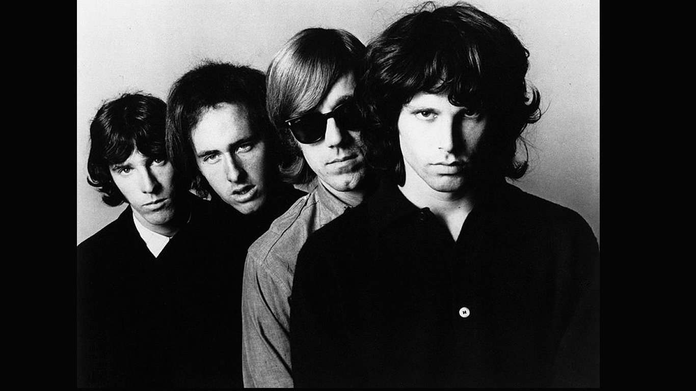

THE DOORS
The Doors fue una banda del Rock psicodélico estadounidense, formada en Los Ángeles, California en julio de 1965 y disuelta en 1973. Aunque la carrera de The Doors terminó en 1973 por la muerte de Jim Morrison, su popularidad ha persistido. La década de su éxito fue de 1960 a 1970.

Integrantes
- Jim Morrison (Vocalista)
- Ray Manzarek (Teclado)
- Robby Krieger (Guitarra)
- John Densmore (Batería)
- Petty Sullivan (Bajo)
Canciones más exitosas
- Riders on the storm
- People are strange
- Touch Me
- Light My fire
- L.A. Woman
- Break On through
- Boadhouse blue